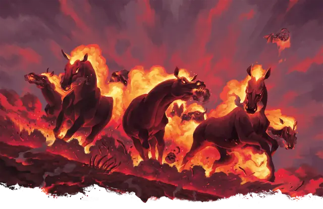

Кошмар
Nightmare
Большое Исчадие, Нейтральное Злое

Класс Защиты 13 Инициатива +2 (12)
Хиты 68 (8к10 + 24)
Скорость 60 футов, Полёта 90 футов (парит)
| мод | спас | ||
|---|---|---|---|
| СИЛ | 18 | +4 | +4 |
| ЛОВ | 15 | +2 | +2 |
| ТЕЛ | 16 | +3 | +3 |
| мод | спас | ||
|---|---|---|---|
| ИНТ | 10 | +0 | +0 |
| МДР | 13 | +1 | +1 |
| ХАР | 15 | +2 | +2 |
Иммунитеты Огонь
Чувства пассивное Восприятие 11
Языки понимает Общий, Инфернальный и язык Бездны, но не говорит
Опасность 3 (700 опыта; БВ +2)
Особенности
Дарование сопротивления к огню. Кошмар может даровать Сопротивление урону Огнём своему всаднику, пока тот верхом на нём.
Свечение. Кошмар испускает Яркий свет в радиусе 10 футов и Тусклый свет ещё на 10футов.
Действия
Копыта. Бросок рукопашной атаки: +6, досягаемость 5 фт. Попадание: 13 (2к8 + 4) Дробящего урона плюс 10 (3к6) урона Огнём.
Эфирный шаг. Кошмар, а также до трёх согласных существ в пределах 5 футов от него, телепортируются на Эфирный план с Материального или наоборот.
Бонус мастерства +2
Среда обитания Нижние планы
Сокровища Отсутствуют
Кошмар
Ужасный конь с Нижних планов
Кошмары похожи на лошадей с пылающей гривой, горящими копытами и дымящимися глазами. Они наводят ужас на слабых созданий и нередко принимают участие в злодеяниях обитателей Нижних планов. Эти сверхъестественные лошади легко перемещаются между Эфирным и Материальным планами, и многим из них ведомы порталы, ведущие на Нижние планы, в Царство Теней или другие зловещие реальности.
Из-за невероятной скорости, выносливости и способности кошмаров скакать галопом по планам бытия многие злодеи мечтают завладеть этими скакунами. Совершите бросок по таблице «Всадник кошмара» для вдохновения или выберите сами силы, которым служат эти скакуны.
Всадник кошмара
| 1к6 | Верхом на кошмаре скачет... |
| 1 | Чемпион или посланец злого божества. |
| 2 | Группа лихачащих бесов или квазитов. |
| 3 | Невинная душа, пойманная диким Исчадием. |
| 4 | Охотящийся за знаниями маг, культист или лич. |
| 5 | Ночная карга, перегоняющая ларв на другой план. |
| 6 | Злой всадник, такой как рыцарь смерти, эриния, инкуб или вампир. |